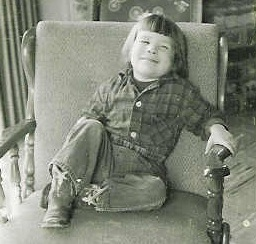
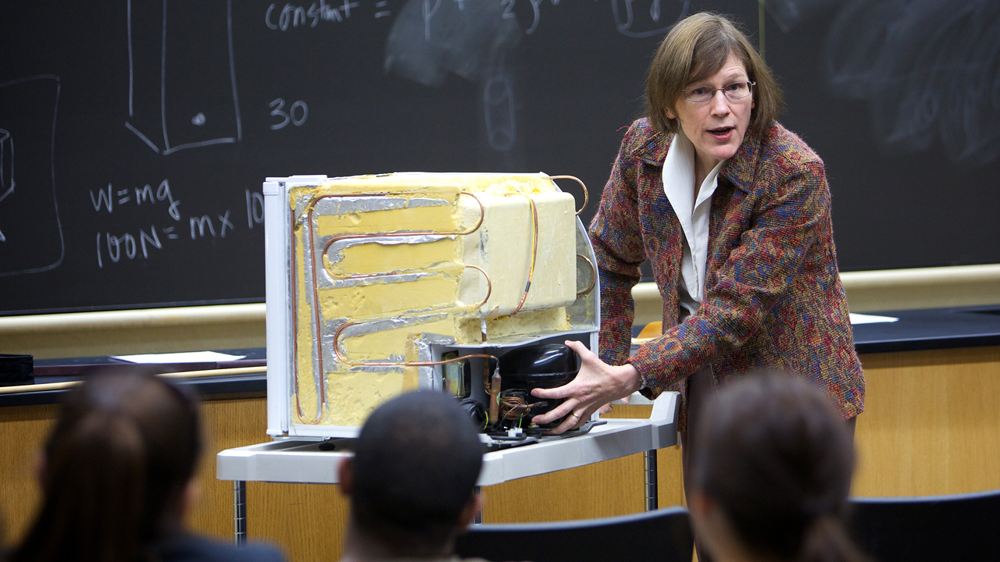

Dr. Barbara Oakley is a professor of engineering at the University of Oakland, Michigan, an expert in education and neuroscience, and the director of Coursera's Learning How To Learn.
Her course is the most popular in the world, with more than 2.8 million students, and counting!

Young Oakley was born in Lodi, California, in 1955 to Alfred and Constance Grim.
She joined the army right after high school where she became a U.S. Army captain
She was a Russian translator on fishing vessels in the Bering Sea. She wrote a book –Hair of the Dog: Tales from a Russian Trawler, about her experience.
She spent a season as the radio operator at the South Pole Station in Antarctica where she met her husband, Philip Oakley.

She is a recipient of the Michigan Distinguished Professor of the Year award.
She wrote the book A Mind for Numbers, a companion book to her popular online course, Learning How To Learn.
And with millions of people all over the world who took her online course Learning How To Learn, she is undoubtedly the
MOTHER OF NEW LEARNERS